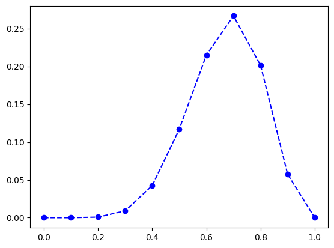

Bayesian Machine Learning
These notes are based on the first lecture on Bayesian ML by Andrew Gordon Wilson, NYU, 2023.
Notes
This lecture is about motivating the need for Bayesian ML. What does it mean to think in a probabilistic way? How do we principally reduce epistemic uncertainity and incorporate our beliefs?
Here are some discussions:
- Which model would you choose? \[
\begin{align*}
y &= a_0 + a_1 t \\
y &= a_0 + a_1 t + a_2 t^2 + a_3 t^3 \\
y &= a_0 + a_1 t + a_2 t^2 + a_3 t^3 + \ldots + a_{100} t^{100}
\end{align*}
\]
- We should ideally choose the third because it has the largest parameter space, and provides more options
- Should data size be relevant to size of a model?
- Although overfitting is a problem, but it is known that overparametrized models like NNs don’t overfit
- Model complexity should depend on the problem and the formalism of our beliefs and inductive biases, not how many observations we have
- The case for epistemic uncertainity modelling.
- More data should reduce uncertainity and improve prediction
- More data should not change the model
- Bayesian Model Average
- It is about Marginilaztion vs. Optimization
- Instead of using one value for the weights, we use a distribution of weights
Following are three problems to illustrate probabilistic thinking:
01. Linear Regression
Suppose we have a dataset \(D = \{x_i, y_i\}_N\). What model do we fit to this?
Answer:
We can fit a simple M-degree polynomial model \(y = f_w(x) = \sum_{i=0}^M w_i x^i\). To obtain these parameters, we need to define an objective i.e. loss function to optimize. A simple choice is the Squared Error loss \(L(w) = \textcolor{green}{\sum_{i=1}^N (y_i - f_w(x_i))^2}\). This involves solving for \(w^* = argmin_w L(w)\) which has a closed form solution \(w^* = (X^T X)^{-1} X^T y\).
One way to regularize this parameter space is to restrict large coefficient values of higher degree polynomial terms. The \(L_2\) norm \(\sum_{i=1}^M \lambda_i w_i^2\) is an additional loss term. However setting these weights \(\lambda_i\) is arbitrary, because higher degree polynomial weights have oscillatory responses, and are not well understood. All this does is contraints weights to be near 0.
Bayesian Answer:
We can alternatively formulate this as a probabilistic model, where we assume that the data is generated from a linear polynomial model with Gaussian noise \(y = f_w(x) + \epsilon\), where \(\epsilon \sim \mathcal{N}(0, \sigma^2)\).
Then we can write the likelihood of fitting \(y\) for a given \(w\) as \(p(y | x, w, \sigma^2) = \mathcal{N}(y | f_w(x), \sigma^2)\). The likelihood of the entire data \(p(D|w)\) would be a product of the normals. We observe that maximizing this likelihood is equivalent to minimizing the squared error loss.
\[ \begin{align*} \log p(D | w) &= \sum_{i=1}^N \log p(y_i | x_i, w, \sigma^2) = \sum_{i=1}^N \log \mathcal{N}(y_i | f_w(x_i), \sigma^2) \\ &= \sum_{i=1}^N \log \frac{1}{\sqrt{2 \pi \sigma^2}} \exp \left( - \frac{(y_i - f_w(x_i))^2}{2 \sigma^2} \right) \\ &= -\frac{1}{2\sigma^2} \textcolor{green}{\sum_{i=1}^N (y_i - f_w(x_i))^2} + const \end{align*} \]
Suppose we want to say that the weights are normally distributed, i.e. \(w \sim \mathcal{N}(0, \Sigma)\). Then, we can write the posterior distribution of the weights as \(p(w | D, \sigma^2) \propto p(D | w, \sigma^2) p(w)\). Maximizing the posterior involves maximizing the \(log p(w)\) which is equivalent to reducing \(w^T w\) to reduce variance of the gaussian prior.
Therefore, maximizing this posterior is equivalent to minimizing the regularized loss function \(L(w) + \lambda w^T w\). This gives bayesian interpretation to regularization.
02: Coin Tossing
Suppose we toss a coin \(N\) times and observe \(m\) heads. What is the probability that the next toss is a head?
Answer:
Let \(\lambda\) be the bias i.e. probability of getting a head. The trivial answer would be \(\lambda = \frac{m}{N}\). This is the frequentist estimation, which seems reasonable but misses a lot of things. If we have low counts, \(m = 1\) and \(N = 1\), shall we always predict heads?
Let us think probabilistically that incorporates the data and our prior beliefs.
Bayesian Answer:
The probabilistic way is to assign a probability to each possible parameter value, and then determine which parameter values are more likely. It is about the entire distribution of the parameter instead of only a few modes.
We ask what is the likelihood and what is the prior?
The likelihood of the data given a parateter value is \(p(D | \lambda) = \prod_{i=1}^N p(x_i | \lambda) = \binom{N}{m}\lambda^m (1 - \lambda)^{N-m}\) is a binomial distribution, as a product of Bernoulli distributions.
The naive way now is the find the \(\lambda\) that maximizes this likelihood. \[ \begin{align*} L &= \binom{N}{m}\lambda^m (1 - \lambda)^{N-m} \\ \frac{dL}{d\lambda} &= \binom{N}{m} m \lambda^{m-1} (1 - \lambda)^{N-m} - \binom{N}{m} (N - m) \lambda^m (1 - \lambda)^{N-m-1} \\ &= \binom{N}{m} \lambda^{m-1} (1 - \lambda)^{N-m-1} \left( m (1 - \lambda) - (N - m) \lambda \right) \\ &= \binom{N}{m} \lambda^{m-1} (1 - \lambda)^{N-m-1} \left( m - N \lambda \right) = 0 \\ \lambda &= \frac{m}{N} \end{align*} \]
This is called the maximum likelihood estimate (MLE). \(\lambda = \frac{m}{N}\). But this is a point estimate, and runs into the same frequentist problem for low data.
We now explore other possible values of \(\lambda\) and their likelihood. Suppose we have \(N = 10\), \(m = 7\):
Code
import math
import numpy as np
import matplotlib.pyplot as plt
N = 10
m = 7
x = np.linspace(0, 1, 11)
y = math.comb(N, m) * x**m * (1 - x)**(N - m)
plt.plot(x, y, 'bo--')
l_07 = math.comb(N, m) * 0.7**m * (1 - 0.7)**(N - m)
l_06 = math.comb(N, m) * 0.6**m * (1 - 0.6)**(N - m)
print(f"p(0.6) / p(0.7) = {l_06 / l_07:.2f}")p(0.6) / p(0.7) = 0.81
We observe that bias = 0.7 has the most likelihood. And 0.6 is 80% as likely as 0.7. We are thinking of assigning every possible value of \(\lambda\) a probability. When we have more data, the likelihood will be more peaked around the true value.
Code
import math
import numpy as np
import matplotlib.pyplot as plt
N = 100
m = 70
x = np.linspace(0, 1, 11)
y = math.comb(N, m) * x**m * (1 - x)**(N - m)
plt.plot(x, y, 'go--')
l_07 = math.comb(N, m) * 0.7**m * (1 - 0.7)**(N - m)
l_06 = math.comb(N, m) * 0.6**m * (1 - 0.6)**(N - m)
print(f"p(0.6) / p(0.7) = {l_06 / l_07:.2f}")p(0.6) / p(0.7) = 0.12We now see that 0.6 is now 11% as likely as 0.7. We are more less confident about this choice now.
How can we introduce some prior belief, say yesterday we have tossed 1000 coins and observed 301 heads? We should be really sure that the bias is 0.3 instead of the now 0.7. Using the bayesian philosophy, we modify the likelihood to include this prior belief.
\[posterior \propto likelihood * prior\] \[p(\lambda | D) \propto p(D | \lambda) p(\lambda)\]
To make life easy, we can choose the prior to resemble the likelihood (Binomial). The Beta distribution \(p(\lambda) = \text{Beta}(\lambda | a, b) = \frac{\lambda^{a-1} (1 - \lambda)^{b-1}}{B(a, b)}\), where \(B(a, b)\) is the beta function, a is no. of heads and b is no. of tails. Only note the shape of the beta distribution as we are ignoring the constant term.
Code
import numpy as np
import matplotlib.pyplot as plt
# Generate data
x = np.linspace(0, 1, 100)
a1, b1 = 10, 40
a2, b2 = 301, 699
y1 = (x**(a1-1)) * ((1-x)**(b1-1))
y2 = (x**(a2-1)) * ((1-x)**(b2-1))
# Create the first plot
fig, ax1 = plt.subplots()
# Plot and shade y1
line1, = ax1.plot(x, y1, 'r-', label='a=10, b=40', linewidth=2)
ax1.fill_between(x, y1, color='red', alpha=0.2)
ax1.set_yticks([]) # Remove y-axis ticks
# Create the second plot sharing the x-axis
ax2 = ax1.twinx()
# Plot and shade y2
line2, = ax2.plot(x, y2, 'b-', label='a=301, b=699', linewidth=2)
ax2.fill_between(x, y2, color='blue', alpha=0.2)
ax2.set_yticks([]) # Remove y-axis ticks
# Add labels and titles
ax1.set_xlabel('bias ($\lambda$)')
# Add legends inside the plot
ax1.legend(loc=(0.65, 0.9)) # position in the top left corner
ax2.legend(loc=(0.65, 0.8)) # position a bit lower than the first legend
plt.show()The posterior simplifies to another Beta distribution with parameters \(Beta(m+a, N-m+b)\). \[ \begin{align*} p(\lambda | D) &\propto \lambda^m (1 - \lambda)^{N-m} \lambda^{a-1} (1 - \lambda)^{b-1} \\ &\propto \lambda^{m+a-1} (1 - \lambda)^{N-m+b-1} \end{align*} \] Since the posterior and prior both are Beta distributions, it is easy to visualize how the prior changes. Through the moments we can see that the frequentist estimate arises out of N going to infinity, with low variance/uncertainity.
\[ \begin{align*} \mathbb{E}[\lambda] &= \frac{m + a}{N + a + b} \\ \lim_{N \to \infty} \mathbb{E}[\lambda] &= \frac{m}{N} \\ \mathbb{V}[\lambda] &= \frac{(m + a)(N - m + b)}{(N + a + b)^2 (N + a + b + 1)} \\ \lim_{N \to \infty} \mathbb{V}[\lambda] &= 0 \end{align*} \]
Applying these priors to the likelihood for observations \(N = 10, m=7\) we notice the posterior change. The red prior is weaker than the blue prior. The red posterior has shifted towards the mean of the observations (likelihood), whereas the blue posterior is not that affected, only a slight shift, because of a stronger prior.
Code
import numpy as np
import matplotlib.pyplot as plt
x = np.linspace(0, 1, 101)
# observations
N = 10
m = 7
# priors
_a1, _b1 = 10, 40
_a2, _b2 = 301, 699
_prior1 = (x**(_a1-1)) * ((1-x)**(_b1-1))
_prior2 = (x**(_a2-1)) * ((1-x)**(_b2-1))
# posteriors
_post1 = (x**(m+_a1-1)) * ((1-x)**(N-m+_b1-1))
_post2 = (x**(m+_a2-1)) * ((1-x)**(N-m+_b2-1))
fig, ax1 = plt.subplots(figsize=(8.5, 5))
ax1.plot(x, _prior1, 'r.--', label='a=10, b=40 (Weak Prior)')
ax1.set_xlabel('Bias')
ax1.set_yticks([]) # Remove y-axis ticks
ax2 = ax1.twinx()
ax2.plot(x, _prior2, 'b.--', label='a=301, b=699 (Strong Prior)')
ax2.set_yticks([]) # Remove y-axis ticks
ax3 = ax1.twinx()
ax3.plot(x, _post1, 'r.-', label='a=10, b=40 (Posterior)')
ax3.set_yticks([]) # Remove y-axis ticks
ax4 = ax1.twinx()
ax4.plot(x, _post2, 'b.-', label='a=301, b=699 (Posterior)')
ax4.set_yticks([]) # Remove y-axis ticks
ax1.legend(loc=(0.6, 0.9))
ax3.legend(loc=(0.6, 0.82))
ax2.legend(loc=(0.6, 0.74))
ax4.legend(loc=(0.6, 0.66))
plt.show()Since the beta distribution is known analytically, it is easy to compute the posterior at any point. However, if the prior has a different functional form lets say like a gaussian, it would be difficult to analytically compute the posterior. We must enumerate through all the values of the prior to calculate each of the terms and then the denominator.
03. Urn Problem
There are 11 urns with 10 balls each. The \(i^{th}\) urn has \(i\) black balls. At every turn, we pick an urn at random and draw a ball with replacement. Suppose we observe \(m\) black balls after \(N\) turns.
- What is the probability that the next ball is black?
- What is the probability that the next ball is from the \(i^{th}\) urn?
Answer:
The trivial way to answer these questions partly would be:
- Probability of the next ball being black is \(\frac{m}{N}\).
- Let us say \(m = 3\) and \(N = 10\). Then we can say that its most likely we are picking from the 4th urn, because 4th urn has \(p(m) = \frac{3}{10}\). But can’t trivially assign a probability to this 4th urn.
But we can see that this is not a very good or complete answer. To obtain the probabilities for each urn, we need a probabilistic approach.
Bayesian Answer:
We need to find the posterior \(p(u | D)\), where \(u\) is the urn number \(u \in \{0 \ldots 11\}\). Since order doesn’t matter, \(D\) is just two integers \(m\) and \(N\).
Lets start by modelling the likelihood \(p(m, N| u)\). We can again model this as a binomial distribution where \(p(\lambda | u) = \frac{u}{10}\). Hence, we have \(p(m, N| u) = \binom{N}{m} (\frac{u}{10})^m (1 - \frac{u}{10})^{N-m}\).
Suppose \(m = 3\) and \(N = 10\), we have the likelihood as a function of \(u\) as:
Code
import math
import numpy as np
import matplotlib.pyplot as plt
N = 10
m = 3
x = np.arange(0, 11)
y = math.comb(N, m) * (x / 10) ** m * (1 - x / 10) ** (N - m)
plt.bar(x, y);We see that the likelihood is maximum at \(u = 3\). But other urns around 3rd urn also have substantial probability, and are also likely.
Code
import math
import numpy as np
import matplotlib.pyplot as plt
N = 100
m = 33
x = np.arange(0, 11)
y = math.comb(N, m) * (x / 10) ** m * (1 - x / 10) ** (N - m)
plt.bar(x, y);If we increase the number of samples, then we see that the likelihood concentrating more around a few values.
We can apply the bayesian method to obtain the posterior \(p(u | D) \propto p(D | u) p(u)\). As all urns are equally likely, we have a uniform prior \(p(u) = \frac{1}{11}\). The posterior is then simply \(p(u | D) \propto p(D | u)\). We first calculate the exact posterior.
Code
import math
import numpy as np
import matplotlib.pyplot as plt
m, N = 3, 10
u = np.arange(0, 11)
prior = np.ones(11) / 11
likelihood = math.comb(N, m) * (u / 10) ** m * (1 - u / 10) ** (N - m)
posterior = prior * likelihood
posterior = posterior / posterior.sum()
plt.bar(u, posterior, label='Posterior')<BarContainer object of 11 artists>The posterior is identical to the likelihood as prior is uniform.
We can now obtain the probability of the next ball being black. We marginalize the posterior over all the urns to obtain the probability.
\[ \begin{align*} p(\lambda | D) &= \sum_{u=0}^{10} p(\lambda | u) p(u | D) \\ &= \sum_{u=0}^{10} \frac{u}{10} p(u | D) \end{align*} \]
Code
import math
import numpy as np
m, N = 3, 10
x = np.arange(0, 11)
y = math.comb(N, m) * (x / 10) ** m * (1 - x / 10) ** (N - m) * (1 / 11.)
print(f"p(m) = {y.sum():.3f}")
m, N = 33, 100
x = np.arange(0, 11)
y = math.comb(N, m) * (x / 10) ** m * (1 - x / 10) ** (N - m) * (1 / 11.)
print(f"p(m) = {y.sum():.3f}")p(m) = 0.083
p(m) = 0.009TODO / CLEANUP
- code for marginalizing the gaussian prior.
- maybe section header should be somewhere
- better plotting, maybe merge plots, remove axes, wherever possible
- urn, is it p(m, N) or p(m | N) ?